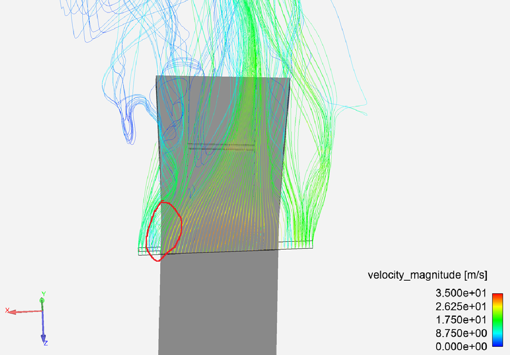
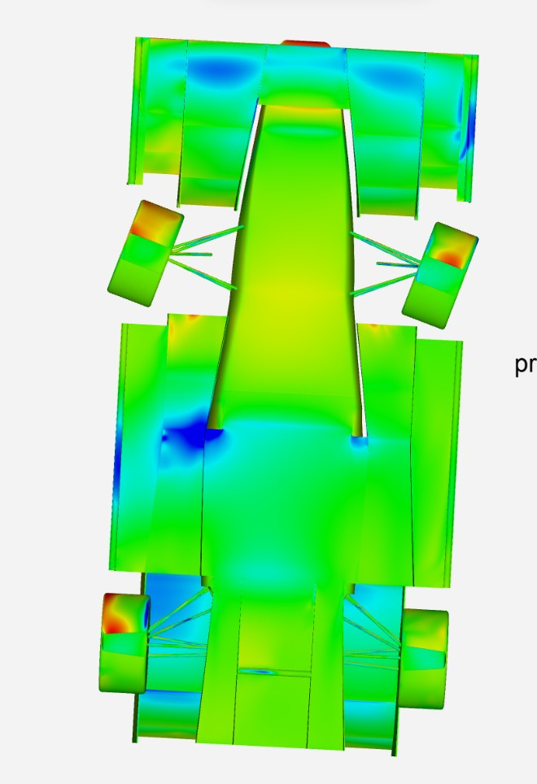
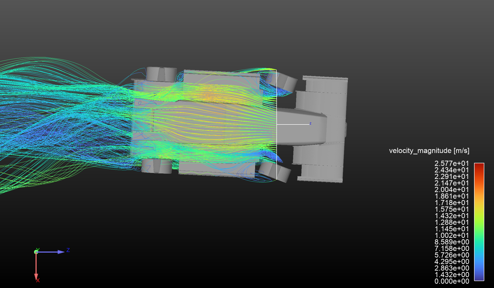
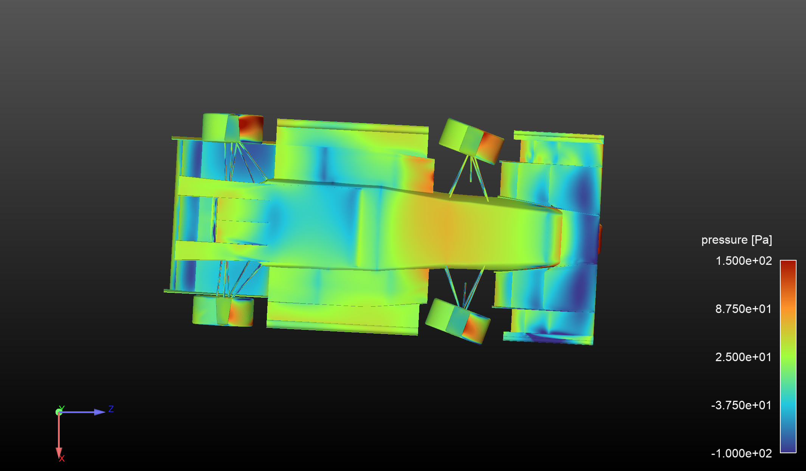

Following the success of the first aero package, development of an undertray was planned for the next car. Most simple undertrays consist of a raised nosecone, a flat floor section, and a diffuser. The resulting converging/diverging section efficiently creates low pressure under the car.
Because of the inherent 3D flow structures of an undertray, 2D geometry optimization was not possible. Therefore, I implemented parameterization for the vehicle CAD allowing for changes in state (i.e. cornering, braking, etc.) as well as undertray dimensions. I also further automated geometry cleanup, meshing, and solving processes to handle surface fixes, body grouping, meshing and local mesh refinements, boundary condition setups, and solver initialization/solve.
Almost immediately, issues with floor sealing became apparent, especially in cornering conditions:


I determined that the issues were stemming from inwash disrupting the diffuser sidewall vortex that keeps flow through the diffuser attached. The resulting flow blockage reduced the efficiency and killed mass flow through the undertray.
I tried multiple solutions to solve this issue by managing a sealing vortex- revising side tunnel geometry, implementing floor strakes, etc. Eventually, I developed a tunnel geometry that stabilized and guided a vortex along the length of the floor, providing better sealing. This resulted in better suction on the floor and better pressure recovery in the diffuser.
Geometry was optimized, but not to the maximum in order to ensure stable, predictable performance and a wider operational envelope across acceleration, braking, and cornering. Elements that were optimized to the max tended to stall abruptly once out of the narrow operational envelope, and the CFD results for the undertray could not be verified until the part was manufactured and being tested on the car.


Further testing showed that for both the diffuser and tunnel outlets, the recommended expansion ratio of 5 was unecessary. I shortened the expansion regions according to the desired pressure recovery characteristics.
This project is still in progress- more updates to come!